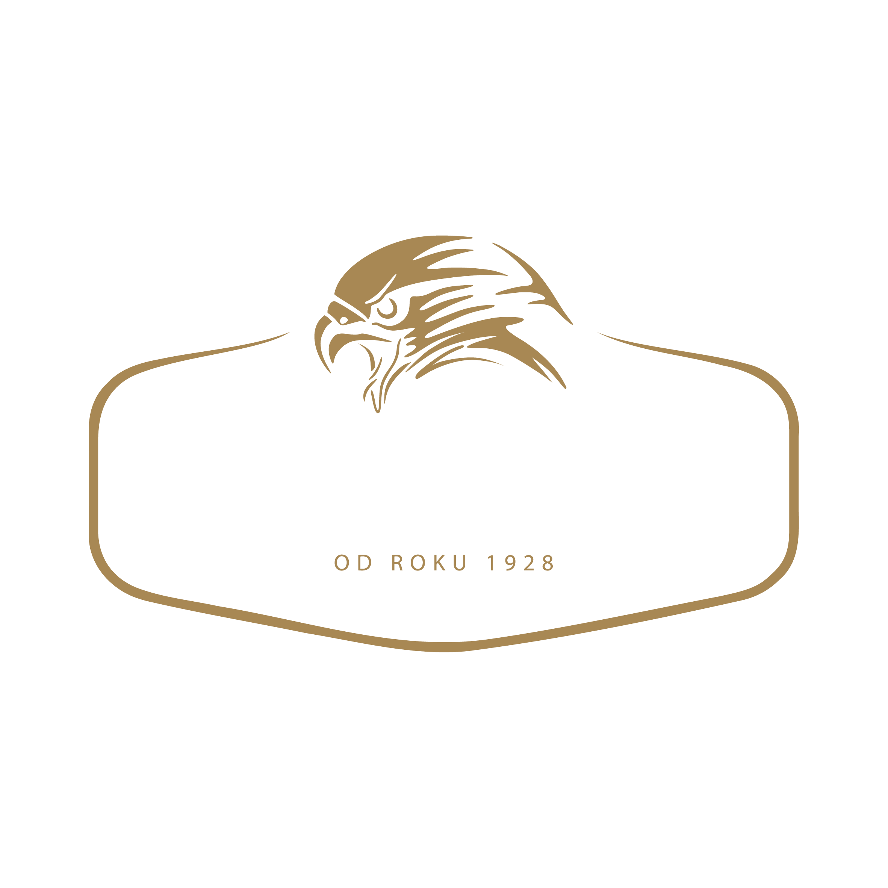
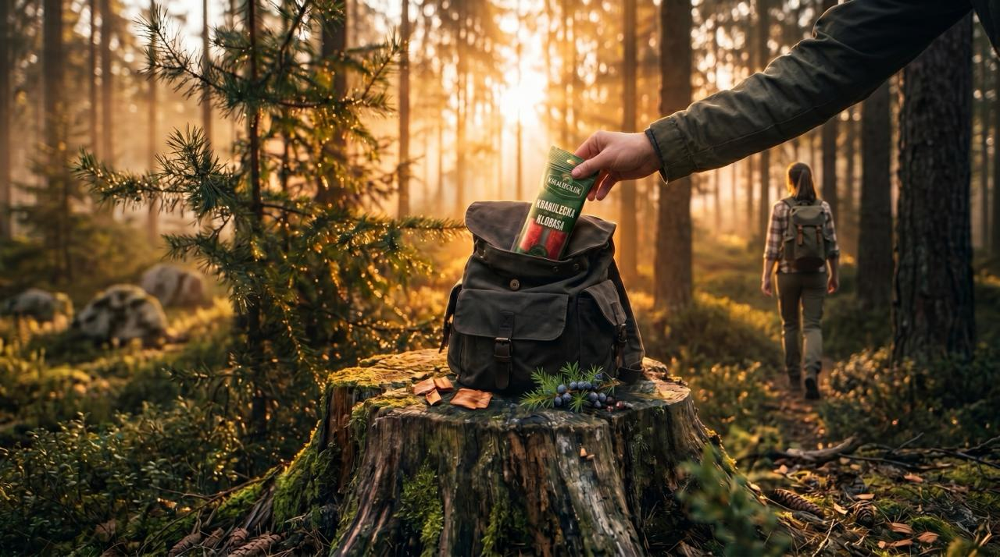
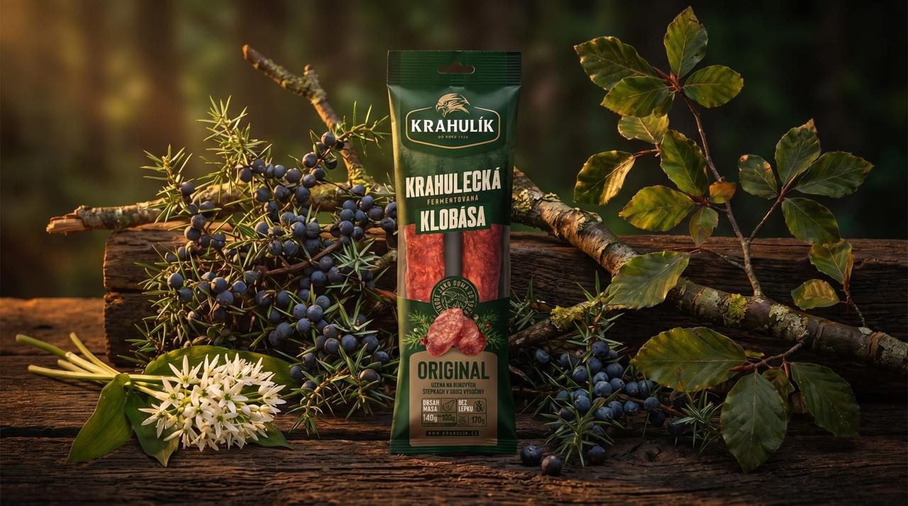
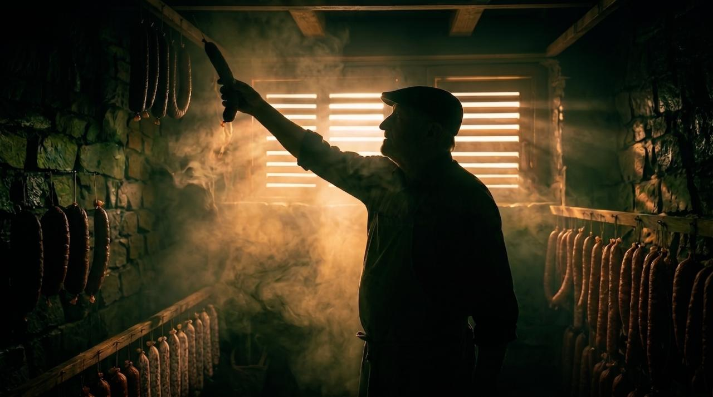
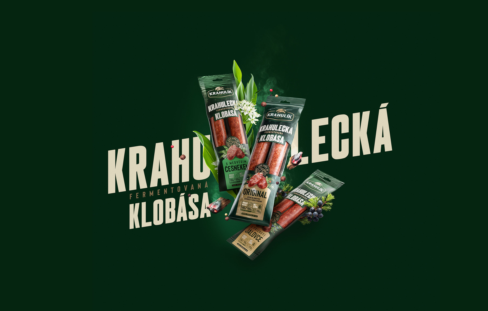
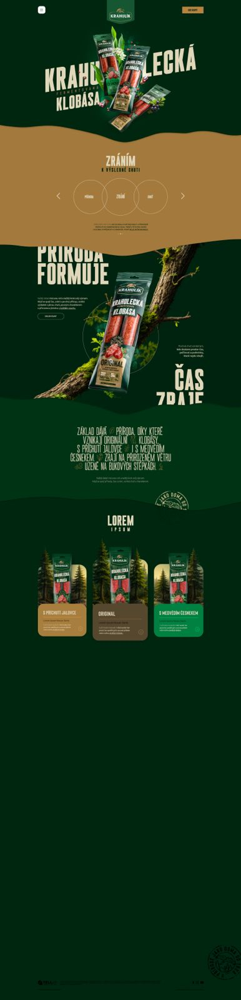

úplě někde jinde
ZKRATKY. ANI MY.
Fermentace je prastarý přírodní proces — příroda si bere čas, protože musí. My na ni nespěcháme. 16 dní výroby, bukový kouř, přírodní sušárny Vysočiny — to nejde urychlit. A právě proto to chutná jinak.
250g flow-pack · 170g štíhlý sáček

Uzená na bukových štěpkách v srdci Vysočiny

Jalovčinky z lesů Vysočiny. Pryskyřičná svěžest.

Jarní bylina, křehká a výrazná. Příroda věděla.
Zraje u lesa,
dozrává na talíři.
Je to věta, která v devíti slovech prodá terroir, řemeslo, původ i chuť — a nechá zákazníka, aby si zbytek dokreslil vlastní fantazií.
25 °C · 90% vlhkost
18 °C · sušárny Vysočiny
Genius loci
Zraje u lesa,
dozrává na talíři.
Ten headline funguje na třech úrovních najednou:
„Dozrává na talíři" pak říká, že příběh se dokončí až ve chvíli, kdy ji sníte — klobása není hotový produkt z továrny, je to živý výsledek přírody a řemesla.
Tenhle obraz funguje dřív, než zákazník přečte složení nebo gramáž.
Headline říká co smí říct jen Krahulík — protože jen Krahulík to tak skutečně dělá.
Nejlepší headline nepopisuje produkt, ale vyvolá zážitek ještě před prvním soustem. Tohle to dělá.
Produkt. Klobása na kůře buku nebo přírodní neutrální ploše. Přirozený gestus, ne póza. Kolem ingredience: jalovčinky, medvědí česnek, větvička buku. Atmosférické ranní světlo nebo zlatá hodinka. Prvky kouře a bukové štěpky. Vypíchnutí hlavních USP produktu.
Packaging · Tesco leták · In-store stojan · Online reklamaPostava (záda nebo profil) na okraji lesa nebo v sušárně. Drží klobásu nebo kouká na les. Atmosféra: ticho, ranní světlo, mlha. Klobása viditelná jako součást scény, ne jako reklama.
Web hero · Instagram · In-store velkoplošný · 600 × 800



vlastní scénu.
Krahulecká klobása stojí na stejné komunikační úrovni jako řada snacků. Obě řady si zaslouží vlastní digitální prostor. Po vzoru microsite pro snaky jsme rozpracovali podobu webu pro klobásy — s příběhem, produkty a přírodou u lesa.

Klikněte kamkoliv pro zavření
„Příroda nezná zkratky. Ani my." — potvrzení hlavního konceptu a klíčové copy linky klientem.
Vydefinování kroků aktivace nové řady. Výběr kanálů, implementace do portfolia. Půjdeme cestou jako u snacků?
Tvorba KV (produktový USP + image), struktura www (koncept Krahulík), produktová a image inzerce.
Texty pro packaging (všechny 3 varianty), web sekce, in-store komunikace, sociální obsah.
Distribuce do Tesco, Globus, Albert. Web, Instagram, in-store. Krahulecká je připravena.